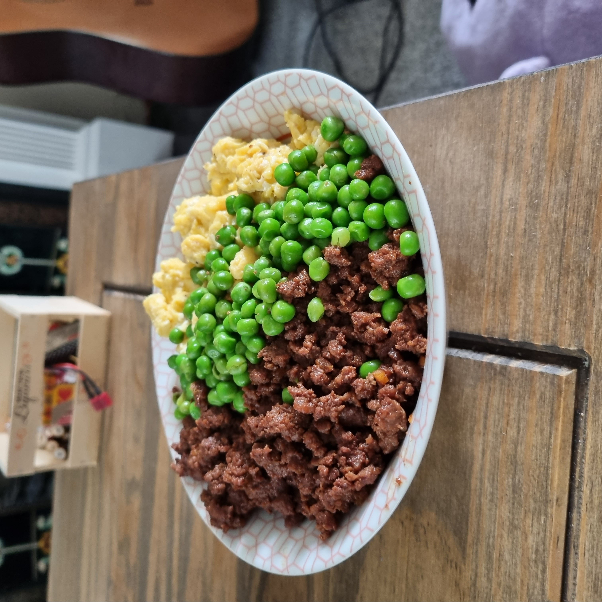

Recipes Home
Soboro Don

Description
This recipe was inspired by Just One Cookbook's Soboro Don Recipe.
My version uses beef mince instead of chicken mince and substitutes Sake for Chinese Rice Wine (though use Sake if you have it, I am sure that makes it even nicer!)
I love this recipe as it is quick and simple to cook, is packed with protein while also being very tasty and comforting.
I tend to use 500g of beef mince for this, which makes approx 4 portions.
Ingredients
For the Soboro Beef
- 500g Beef mince
- 2 inch knob of ginger
- 2 Tbsp Chinese Rice Wine (or Sake if you have it)
- 2 Tbsp Mirin
- 1.5 Tbsp sugar (or more if you prefer a sweeter taste)
- 4 Tbsp soy sauce
For the Scrambled Eggs
- 6-8 large eggs
- 1-2 Tbsp sugar
- Generous sprinkle of salt
- Generous sprinkle of pepper
- 1.5 Tbsp sugar (or more if you prefer a sweeter taste)
- 4 Tbsp soy sauce
For Serving
- 2 cups Jasmine rice (or use Japanese short grain if you have it)
- 1-2 Tbsp sugar
- Handful of green peas or beans
- Pickled ginger (optional)
Instructions
- Cook rice in your preferred way (for me it is a rice cooker!) I tend to start the rice at the beginning so it is just ready when I finish cooking.
- Mince or grate the ginger.
- Combine the mince, rice wine, sugar, soy sauce and ginger, break the mince into small pieces.
- Add ingredients to a pot and set to medium heat, cook until browned.
- At this point you can either add the peas/beans to the meat or steam them separately.
- Continue to cook until the meat has released its juices and most of the liquid has evaporated.
- Set aside and keep warm.
- Mix the eggs, sugar, salt and pepper in a jug until fully combined
- Cook the eggs in a medium saucepan over medium-low heat with a small amount of olive oil or butter.
- Stir often, removing the egg from the bottom and edges.
- Cook the eggs until they are soft and fluffy to your preferred consistency.
- Assemble the bowl with a serving of rice at the bottom then half and half eggs and meat on the top. If the peas/beans were cooked separately they can go in the middle.